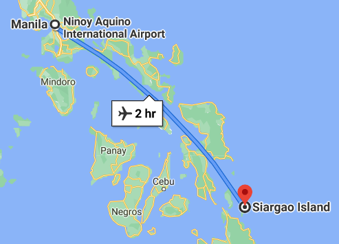
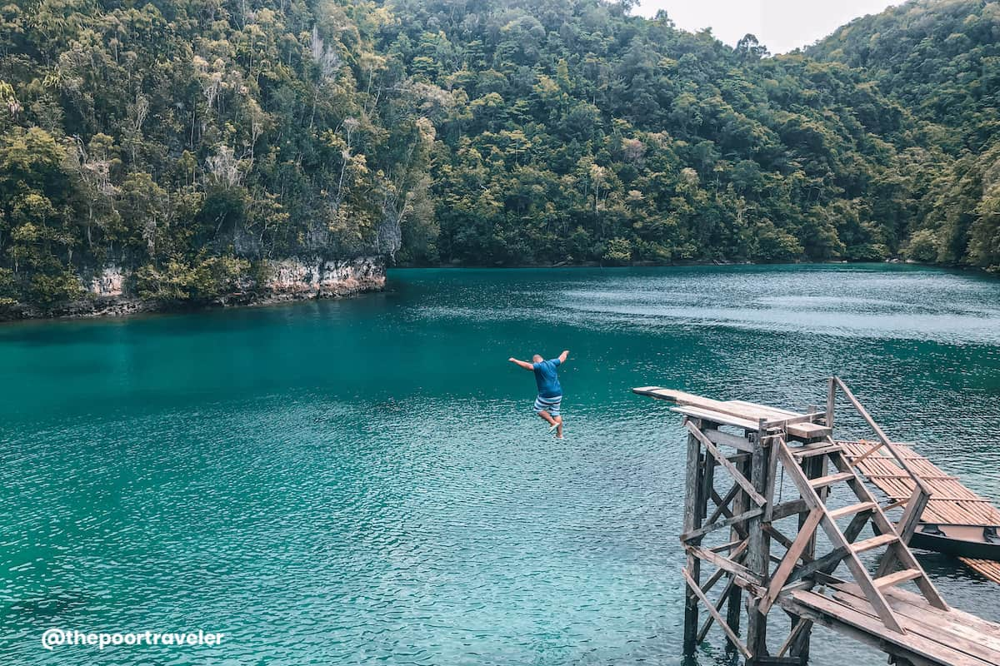
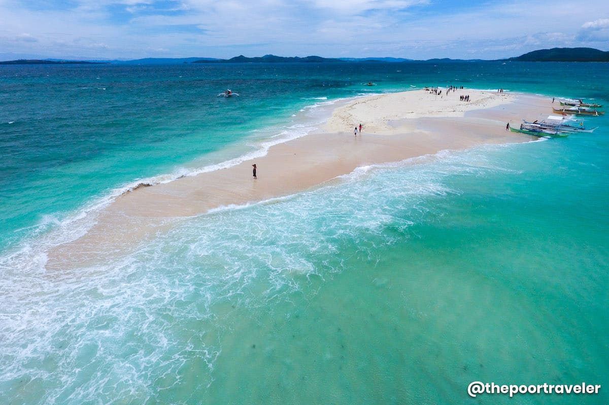
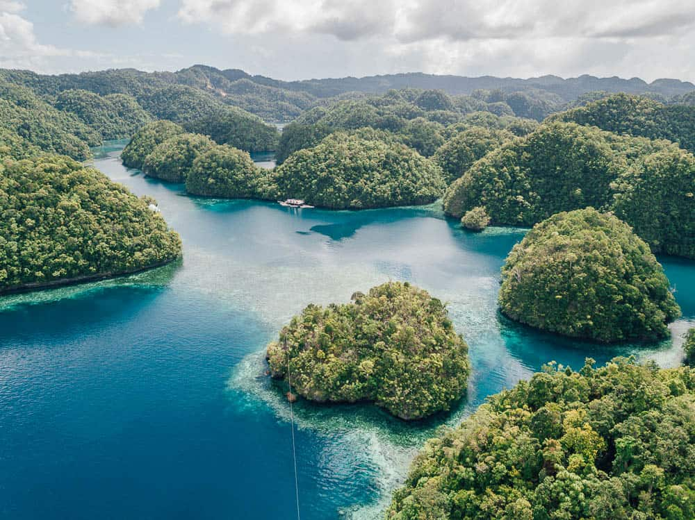
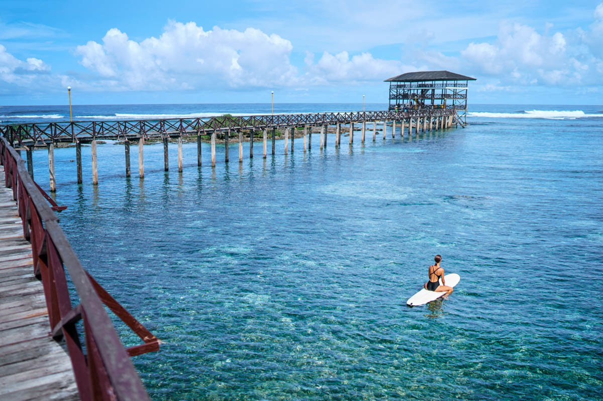

Siargao

Siargao is a
tear-drop shaped island in the Philippine Sea situated 196 kilometers southeast of Tacloban. It has
a land area of approximately 437 square kilometres (169 sq mi). The east coast is relatively straight
with one deep inlet, Port Pilar. The coastline is marked by a succession of reefs, small points and
white, sandy beaches. The neighboring islands and islets have similar landforms.
How to get there?

- The only direct way to travel from Manila to Siargao is by flight. This flight journey takes 1.5
to 2.5 hours and tickets start from Php3,200.
- To get from Manila to Siargao, by other means than flying, you will need to follow the following
4 steps:
- Take the ferry from Manila to Cebu (23 hours)
- Take the ferry from Cebu to Surigao (8 hours)
- Tricycle to the other port of Surigao (40 minutes)
- Ferry from Surigao to Siargao (2 hours)
- Van/tricycle from Dapa (the port in Siargao) to General Luna which will take another 40 mins.
Destinations in Siargao

- Sugba Lagoon is located on the northwestern portion of the island. The jumping-off point
is the town of Del Carmen, which is about a two-hour drive from General Luna. There are many ways
you can explore the lagoon — by renting canoes, bamboo rafts, and paddleboards and by snorkeling.

- Naked Island is a sandbar that is the usual stop on the way back to the main island. Because
there isn’t much here, not even trees, the activities are limited. But you can always take lots of
photos.

- Sohoton Cove, a tourist attraction consisting of a cluster of small islets with lagoons,
limestone caves, and rock formations in Bucas Grande Island in Surigao del Norte.

- Cloud 9 created a venue for beginner and pro surfers to enjoy the thick waves that it had
been blessed with and the beautiful experience it would be giving to the locals and foreigners would
probably make “Visit Siargao Island and surf through the waves” present in most people’s bucket lists.